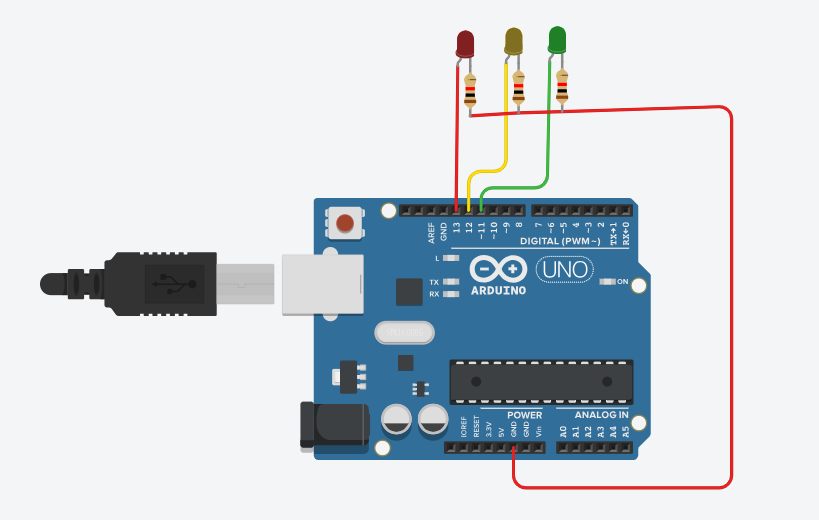
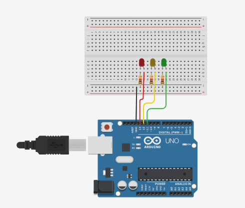

Semáforo com LEDs


Objetivo
Criar um semáforo de trânsito em miniatura usando três LEDs (vermelho, amarelo e verde) que acendem em sequência, simulando o funcionamento de um semáforo real.
Materiais Necessários
- Arduino Uno (ou similar) - 1 unidade
- LED Vermelho - 1 unidade
- LED Amarelo - 1 unidade
- LED Verde - 1 unidade
- Resistores 220Ω - 3 unidades
- Jumpers - Alguns
- Protoboard - 1 unidade
- Cabo USB - 1 unidade
Passo a Passo da Montagem
Esquema das ligações:
LEDs:
- Anodo (perna maior) do LED Vermelho no pino digital 13.
- Anodo (perna maior) do LED Amarelo no pino digital 12.
- Anodo (perna maior) do LED Verde no pino digital 11.
- Cátodos (pernas menores) de todos os LEDs conectados ao GND com resistores de 220Ω em série.
Código
// Definição dos pinos
const int pinoVermelho = 13; // LED Vermelho no pino 13
const int pinoAmarelo = 12; // LED Amarelo no pino 12
const int pinoVerde = 11; // LED Verde no pino 11
void setup() {
// Configura os pinos como saída
pinMode(pinoVermelho, OUTPUT);
pinMode(pinoAmarelo, OUTPUT);
pinMode(pinoVerde, OUTPUT);
}
void loop() {
// Sinal Verde - 5 segundos
digitalWrite(pinoVermelho, LOW);
digitalWrite(pinoAmarelo, LOW);
digitalWrite(pinoVerde, HIGH);
delay(5000);
// Sinal Amarelo - 2 segundos
digitalWrite(pinoVermelho, LOW);
digitalWrite(pinoAmarelo, HIGH);
digitalWrite(pinoVerde, LOW);
delay(2000);
// Sinal Vermelho - 5 segundos
digitalWrite(pinoVermelho, HIGH);
digitalWrite(pinoAmarelo, LOW);
digitalWrite(pinoVerde, LOW);
delay(5000);
}
Explicação do Funcionamento
Este projeto simula o funcionamento de um semáforo de trânsito:
- O LED verde fica aceso por 5 segundos, indicando que os veículos podem passar.
- Em seguida, o LED amarelo acende por 2 segundos, alertando que o sinal vai mudar.
- Por fim, o LED vermelho acende por 5 segundos, indicando que os veículos devem parar.
- O ciclo se repete continuamente, assim como em um semáforo real.
Sequência de funcionamento:
- Verde (5 segundos) → Amarelo (2 segundos) → Vermelho (5 segundos) → Verde...
Vídeo Demonstrativo
Dicas e Variações
Considerações importantes para este projeto:
- Você pode ajustar os tempos de cada fase do semáforo alterando os valores de delay() no código.
- Para um projeto mais realista, você pode adicionar um segundo semáforo para pedestres que funcione de forma sincronizada (vermelho para carros = verde para pedestres).
- Experimente adicionar um botão que, quando pressionado, simule o botão de pedestres, fazendo o semáforo mudar para vermelho.
- Para um efeito mais interessante, você pode fazer o LED amarelo piscar antes de mudar para o vermelho.